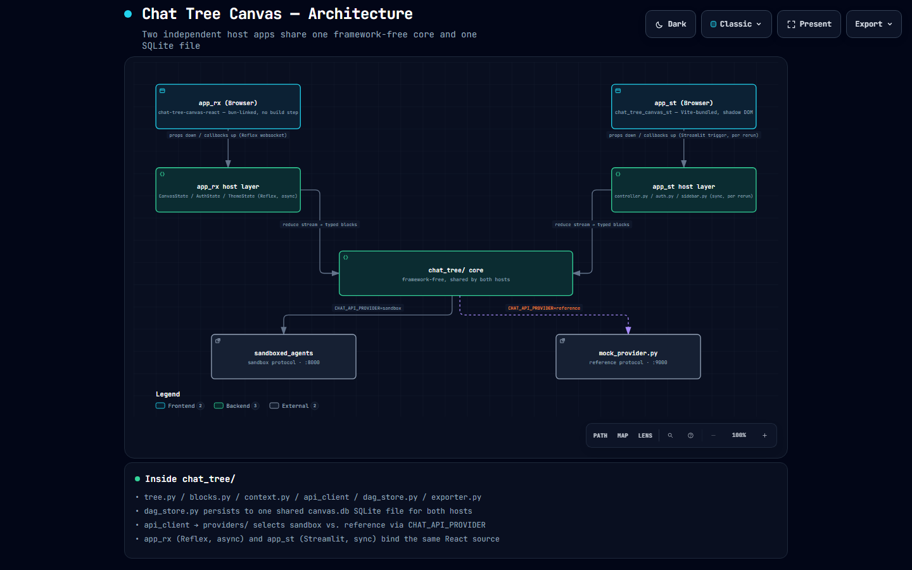
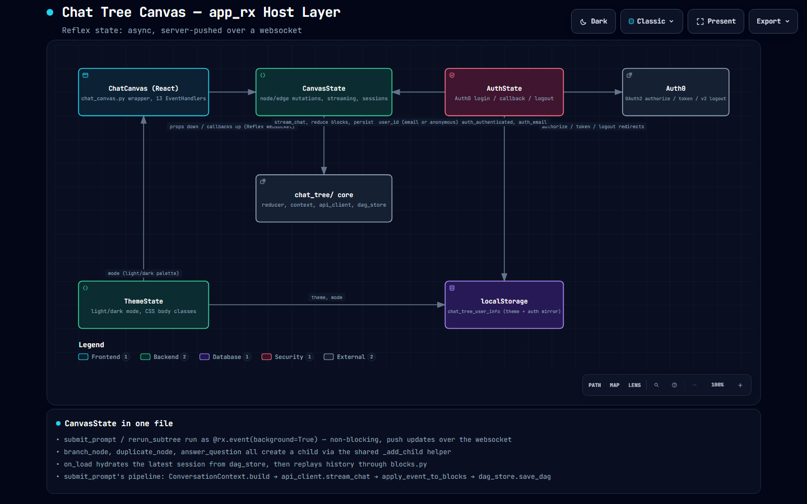
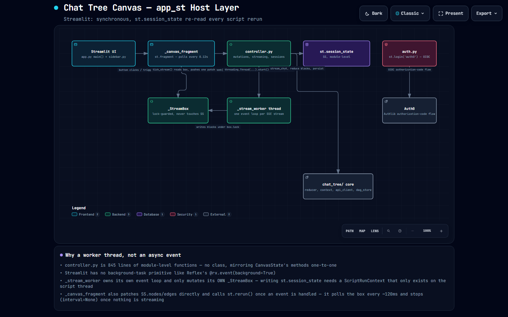
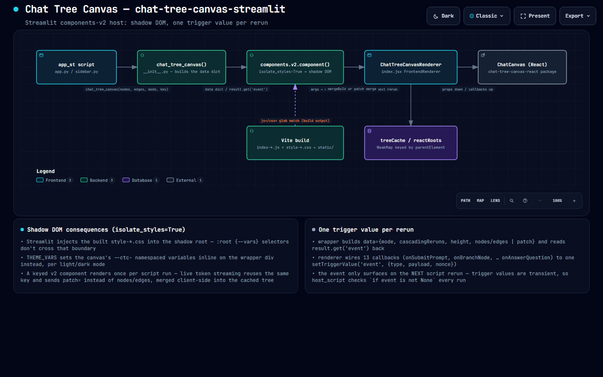
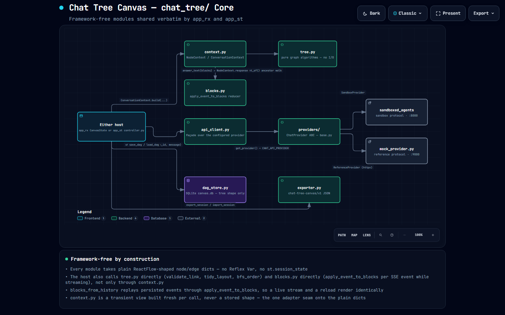
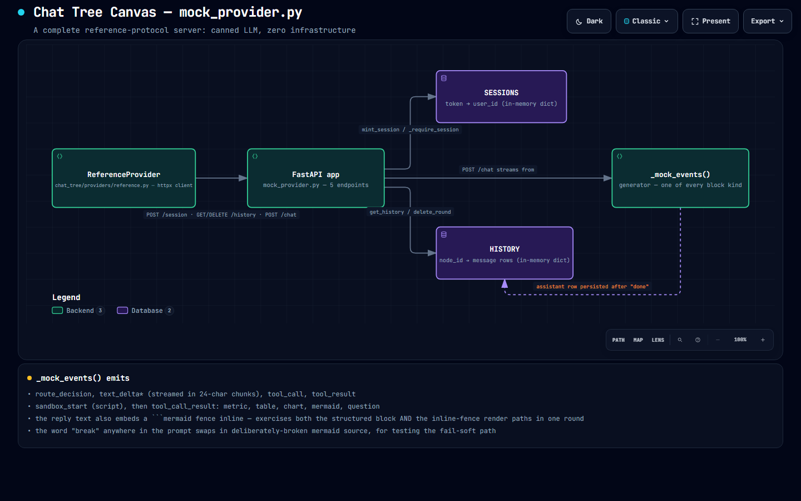
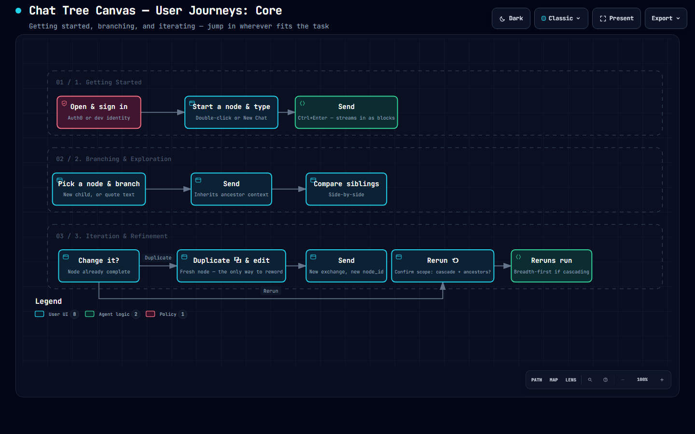
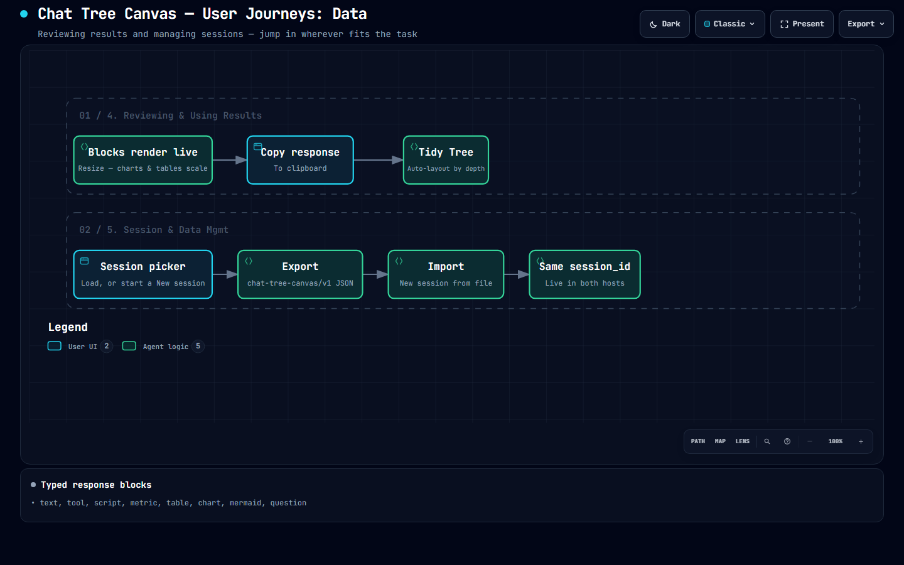

Chat Tree Canvas
A branching, tree-structured chat canvas with two interchangeable frontends (Reflex and Streamlit) over a shared, framework-free core.
Architecture & user journey diagrams

01
The architecture, in one interactive map
Two hosts, one framework-free core, one shared SQLite file.

02
Inside app_rx
CanvasState, AuthState, and ThemeState: Reflex, async, over a websocket.

03
Inside app_st
A worker thread and a lock-guarded box: Streamlit's own way to stream tokens.

04
Inside the Streamlit component
How the canvas mounts in a shadow root and reports one event per rerun.

05
Inside chat_tree/
Six framework-free modules, shared verbatim by both hosts.

06
Inside mock_provider.py
A five-endpoint reference backend in one FastAPI file.

07
Getting started, branching, iteration
Opening the canvas, branching a conversation, and the two ways to revise a node.

08
Reviewing results, managing sessions
Living with what the canvas gives back, and moving a whole session around.